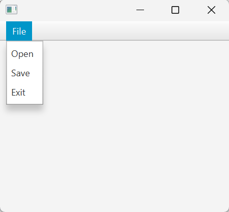

Menu, Menubar, dan MenuItem
Menu
Menu adalah sebuah komponen yang berisi daftar item yang dapat dipilih oleh pengguna. Menu biasanya digunakan untuk mengelompokkan item yang memiliki fungsi yang sama. Menu dapat berupa menu bar, menu konteks, atau menu pop-up.
MenuBar
MenuBar adalah komponen yang berisi daftar menu. MenuBar biasanya ditempatkan di bagian atas aplikasi dan berisi menu utama aplikasi. MenuBar dapat berisi beberapa menu yang memiliki item yang dapat dipilih oleh pengguna.
MenuItem
MenuItem adalah item yang dapat dipilih oleh pengguna dalam sebuah menu. MenuItem biasanya berupa teks yang dapat diklik oleh pengguna. MenuItem dapat memiliki aksi yang akan dijalankan ketika item tersebut dipilih oleh pengguna.
Implementasi Menu, MenuBar, dan MenuItem
Berikut adalah contoh penggunaan Menu, MenuBar, dan MenuItem dalam JavaFX.
import javafx.application.Application;
import javafx.scene.Scene;
import javafx.scene.control.Menu;
import javafx.scene.control.MenuBar;
import javafx.scene.control.MenuItem;
import javafx.scene.layout.BorderPane;
import javafx.stage.Stage;
public class Main extends Application {
@Override
public void start(Stage primaryStage) {
// Membuat MenuBar
MenuBar menuBar = new MenuBar();
// Membuat Menu
Menu fileMenu = new Menu("File");
// Membuat MenuItem
MenuItem openItem = new MenuItem("Open");
MenuItem saveItem = new MenuItem("Save");
MenuItem exitItem = new MenuItem("Exit");
// Menambahkan MenuItem ke Menu
fileMenu.getItems().addAll(openItem, saveItem, exitItem);
// Menambahkan Menu ke MenuBar
menuBar.getMenus().add(fileMenu);
// Membuat BorderPane
BorderPane root = new BorderPane();
// Menambahkan MenuBar ke BorderPane
root.setTop(menuBar);
// Membuat Scene
Scene scene = new Scene(root, 300, 250);
// Menambahkan Scene ke Stage
primaryStage.setScene(scene);
// Menampilkan Stage
primaryStage.show();
}
public static void main(String[] args) {
launch(args);
}
}
Berikut hasil dari contoh di atas.
{kind=link}